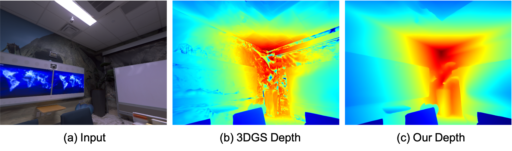
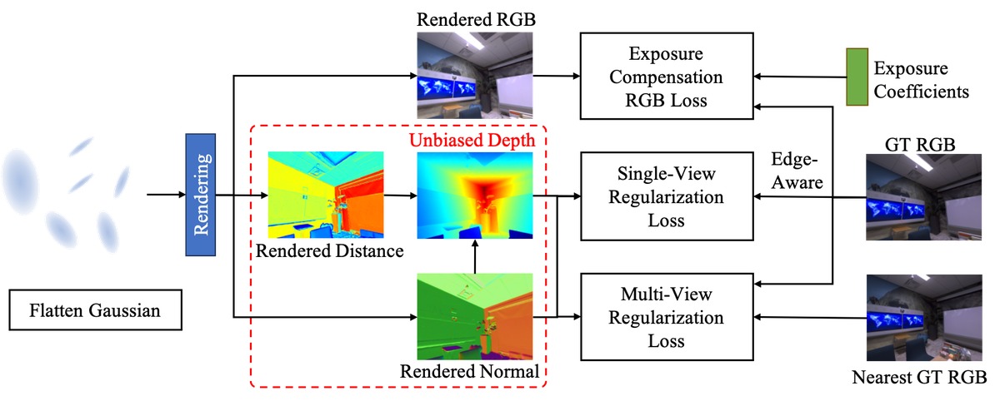
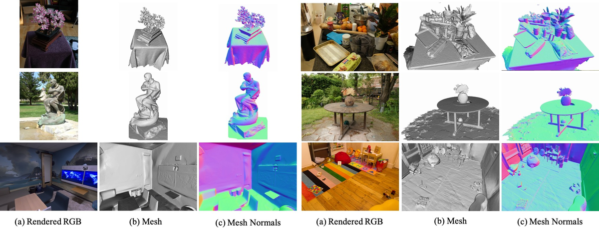
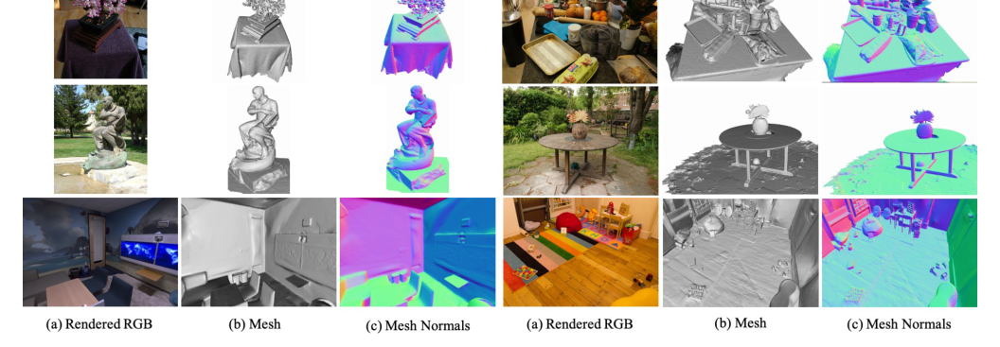
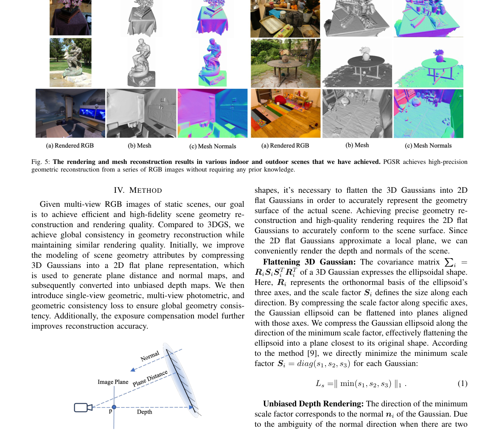
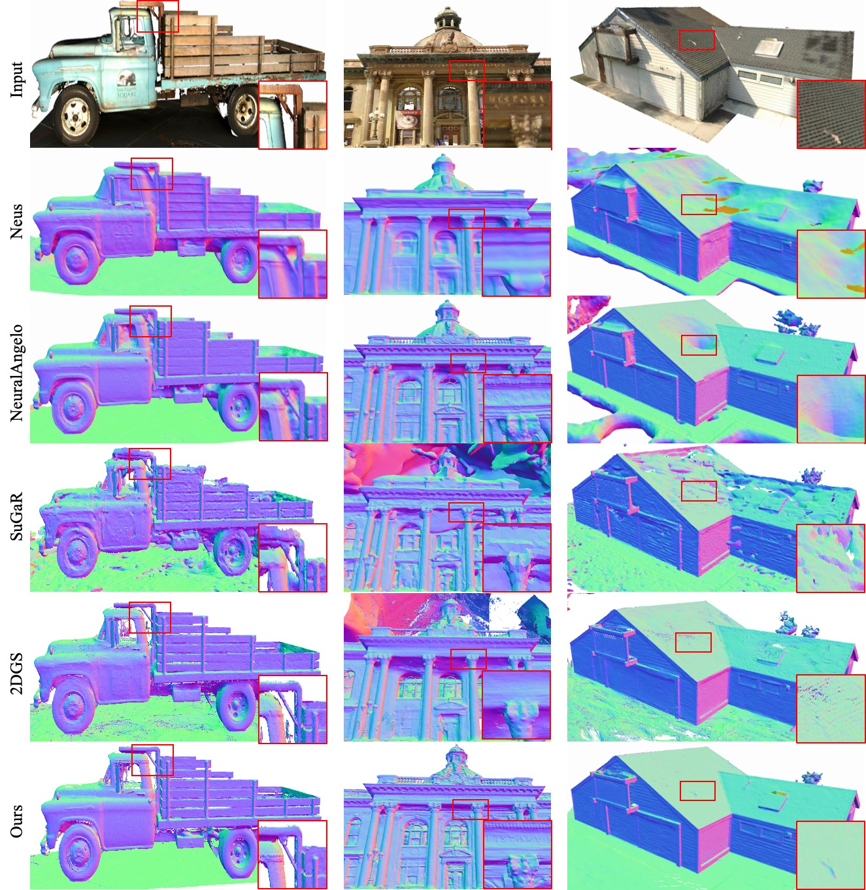
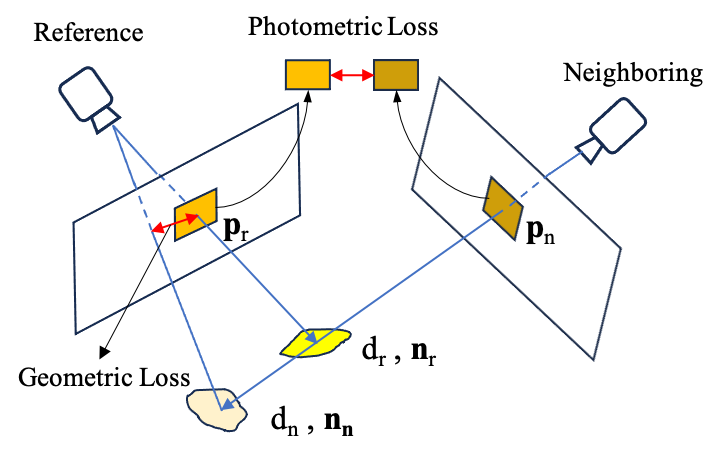

PGSR Planar-based Gaussian Splatting for Efficient
简单摘要
最近，3D高斯泼溅（3DGS）因其高质量的渲染以及超快的训练和渲染速度而受到广泛关注。论文的基本思路是把 然而，由于高斯点云的非结构化和不规则性，单纯依靠图像重建损失很难保证几何重建精度和多视图一致性 放进同一条解决链路里处理。
进一步看，尽管最近出现了许多基于3DGS的表面重建研究，但其网格质量普遍不尽如人意。最后得到的主要结论是：为了解决这个问题，我们提出了一种基于平面的快速高斯喷射重建表示（PGSR），以实现高保真表面重建，同时确保高质量渲染。


正如之前的方法中所讨论的，高斯通常与实际表面不太相符，导致几何精度较差。论文的基本思路是把 此外，仅基于图像重建损失进行优化很容易导致局部最优，最终导致高斯模型无法符合实际表面并表现出较差的几何精度 放进同一条解决链路里处理。
进一步看，因此，为了解决这些问题，我们提出了一种基于 3DGS 的新颖框架，实现高保真几何重建，同时保持 3DGS 的高质量渲染质量、快速训练和渲染速度特征。最后得到的主要结论是：在本文中，我们提出了一种基于 3DGS 的新型无偏深度渲染方法，有助于集成各种几何约束以实现精确的几何估计。
核心创新
这篇工作的第一个关键点，在于它没有停留在模块堆叠层面，而是重新整理了问题的切入方式：基于这种平面表示，我们引入了一种无偏深度渲染方法，它将渲染平面到相机的距离和法线贴图，然后可以转换为深度图。
第二个重要变化是：借助可用的几何深度、距离和法线贴图，在以下部分中介绍单视图正则化和多视图正则化变得更加容易。这让方法不仅给出结果，也把为什么这样设计说得更清楚。
从整体效果看，相反，我们首先渲染平面的法线图和距离图，然后将它们转换为深度图。这也是它和单纯工程拼装方案拉开差距的地方。
技术细节
从方法链路看，系统首先处理的是：给定静态场景的多视图RGB图像，我们的目标是实现高效、高保真的场景几何重建和渲染质量。接下来真正起关键作用的是：与 3DGS 相比，我们在几何重建方面实现了全局一致性，同时保持了相似的渲染质量。这样安排直接带来的收益是：基于这种平面表示，我们引入了一种无偏深度渲染方法，它将渲染平面到相机的距离和法线贴图，然后可以转换为深度图。在训练和推理阶段，论文还额外考虑了：实现精确的几何重建和高质量渲染需要二维平面高斯准确地符合场景表面。这组公式用于定义模型中的变量关系和训练目标。建议先看左侧要预测的对象，再看右侧每一项如何约束优化方向。该公式用于定义核心计算关系。阅读时先看左侧目标量，再看右侧由 N、i、N、R 等变量构成的约束和聚合方式。该公式用于定义核心计算关系。阅读时先看左侧目标量，再看右侧由 D、i、N、d_i 等变量构成的约束和聚合方式。该公式用于定义核心计算关系。阅读时先看左侧目标量，再看右侧由 D、p、D、N 等变量构成的约束和聚合方式。这组公式用于定义模型中的变量关系和训练目标。建议先看左侧要预测的对象，再看右侧每一项如何约束优化方向。该公式用于定义核心计算关系。阅读时先看左侧目标量，再看右侧由 r、L、W、p 等变量构成的约束和聚合方式。该公式用于定义核心计算关系。阅读时先看左侧目标量，再看右侧由 p、H、p 等变量构成的约束和聚合方式。该公式用于定义核心计算关系。阅读时先看左侧目标量，再看右侧由 H、K、R、T 等变量构成的约束和聚合方式。
$$ L_s=\parallel \min(s_1, s_2, s_3) \parallel_1. $$
$$ \bm{N}=\sum_{i\in N}\bm{R}_c^T\bm{n}_i\alpha_i \prod_{j=1}^{i-1}(1-\alpha_j), $$
$$ \bm{\mathcal{D}}=\sum_{i\in N}d_i\alpha_i \prod_{j=1}^{i-1}(1-\alpha_j). $$
$$ \bm{D}(\bm{p})=\frac{\bm{\mathcal{D}}}{\bm{N}(p)\bm{K}^{-1}\tilde{\bm{p}}}, $$
$$ \bm{N}_d(\bm{p})=\frac{(\bm{P}_1-\bm{P}_0)\times(\bm{P}_3-\bm{P}_2)}{|(\bm{P}_1-\bm{P}_0)\times(\bm{P}_3-\bm{P}_2)|}, $$
$$ \color{r} \bm{L}_{svgeom}=\frac{1}{W}\sum_{\bm{p}\in W}(1-\overline{\nabla \bm{I}} )^2 \parallel \bm{N}_d(\bm{p}) - \bm{N}(\bm{p}) \parallel_1, $$
$$ \tilde{\bm{p}_n}=\bm{H}_{rn}\tilde{\bm{p}_r}, $$
$$ \bm{H}_{rn}=\bm{K}_n(\bm{R}_{rn}-\frac{\bm{T}_{rn}\bm{n}_r^T}{d_r})\bm{K}_r^{-1}, $$




实验结论
实验部分首先关心的是：我们选择了三种广泛使用的图像评估指标来验证新颖的视图合成。
对比结果表明，我们与当前最先进的纯新颖视图合成方法以及与我们类似的重建方法进行比较，包括 NeRF 、 Deep Blending 、 IGP 、 Mip-NeRF360 、 NeuS 、 3DGS 、 SuGaR 、 2DGS 和 GOF。进一步结合定性现象和消融分析，可以看出：与当前最先进的方法相比，我们的方法不仅提供了出色的表面重建质量，而且还实现了出色的新颖视图合成。


理解评价
从整篇论文看，它的真正贡献是：为了解决这个问题，我们提出了一种基于平面的快速高斯喷射重建表示（PGSR），以实现高保真表面重建，同时确保高质量渲染，而不是单纯把扩散模型继续微调。作者把问题落在“分布外驾驶场景如何稳定生成”这个更关键的缺口上。
它最有说服力的地方在于：我们还提出了相机曝光补偿模型来应对光照变化较大的场景。这说明论文的方法链路——3D 点云编辑、车辆补全、再到 RL 后训练——是前后闭合的，而不是各模块各自堆叠。
主要局限在于：当前方案仍受算力和时长限制，更适合离线生成而非实时闭环模拟。如果继续往前推进，一个自然方向是把更长时序、更低成本训练和更广泛的 OOD 场景覆盖一起纳入统一评估。
以下相关论文可作为延伸阅读：。